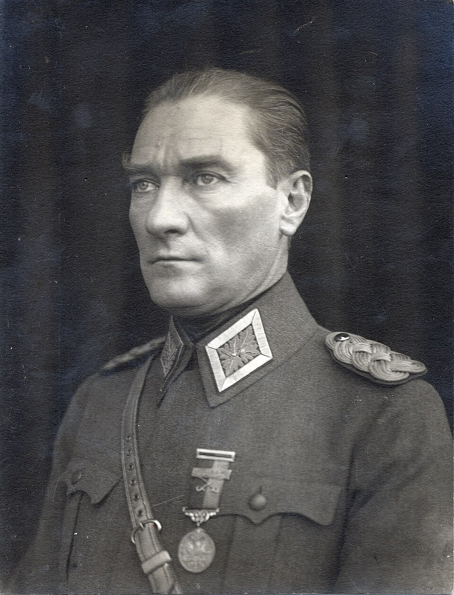

Atatürk’ü yalnızca bir portreye, birkaç ünlü söze ya da bir reform listesine sığdırmak kolay; ama eksik kalır. Onu anlamak için Selanik’teki askeri okuldan başlayıp Şam’a, Çanakkale’ye, Samsun’a ve Ankara’ya uzanan yolu; yanında çalışan insanları; kurduğu yeni devletin imkânlarını olduğu kadar sınırlarını da birlikte görmek gerekir. Bu, kusursuz bir kahramanın değil, aldığı kararların sonuçlarıyla yaşayan bir insanın ve liderin hikâyesi.
Selanik’te başlayan hayat
Mustafa Kemal 1881’de Selanik’te, Osmanlı İmparatorluğu’nun hareketli ve çok kültürlü şehirlerinden birinde doğdu. Babası Ali Rıza Efendi, annesi Zübeyde Hanım’dı. Çocukluğu uzun sürmedi: babasını küçük yaşta kaybetti ve bir süre annesiyle dayısının çiftliğinde yaşadı. Sonra yeniden okula döndü. Bu yılları anlatan biyografilerde, annesinin onun için istediği hayatla Mustafa’nın asker olma isteğinin her zaman aynı yönde olmadığı görülür. Aile içindeki bu ayrıntılar, ilerideki komutanın bir anda ortaya çıkmadığını; önünde seçenekler ve tereddütler bulunan bir çocuk olduğunu hatırlatır.
Önce Selanik’te, ardından Manastır’da askerî eğitim aldı; İstanbul’daki Harp Okulu ve Harp Akademisi’nden 1905’te kurmay yüzbaşı olarak mezun oldu. Askerî eğitim ona yalnızca talimat vermeyi değil, harita okumayı, durum değerlendirmeyi ve kararın bedelini düşünmeyi öğretti. Genç subay olarak Şam’da görev yaptı; Osmanlı’nın uzak eyaletlerinde merkezî yönetimin sınırlarını ve imparatorluğun içindeki gerilimleri yakından gördü. O dönemin subayları için askerlik, siyasetin dışında duran bir meslek değildi: devletin nasıl ayakta kalacağı her yerde konuşulan bir soruydu.
Bir subayın cephelerde yetişmesi
1911’de İtalya’nın Trablusgarp’a saldırması üzerine Mustafa Kemal, bölgeye giden Osmanlı subayları arasında yer aldı. Balkan Savaşları’nın yenilgileri de kısa süre sonra geldi. Osmanlı’nın Avrupa’daki toprakları daralırken, askerî yenilgi yalnızca sınırları değil, subayların dünyaya bakışını da değiştirdi. Mustafa Kemal bu yıllarda farklı cephelerde görev yaptı; ancak onu geniş kitlelerin tanıması Birinci Dünya Savaşı sırasında, Çanakkale’de oldu.
1915’te 19. Tümen komutanı olarak Arıburnu ve Conkbayırı çevresindeki savunmada görev aldı. Çanakkale’deki mücadele, onun askerî ününü bir anda büyüttü; fakat zaferi tek bir komutanın hikâyesine çevirmek, on binlerce askerin ve farklı birliklerin emeğini siler. Mustafa Kemal’in kendi payı, kritik anlarda birlikleri yönlendirmesi ve karar almasıydı. Cephe sonrasında Doğu Anadolu’da ve Suriye’de görev yaptı; savaşın sonuna gelindiğinde imparatorluk yenilmiş, İstanbul işgal edilmişti.
Samsun’a giden yol
1918’deki yenilginin ardından Mustafa Kemal İstanbul’a döndü. Bir süre sonra, Osmanlı hükümetinin verdiği resmî görevle 9. Ordu Müfettişi olarak Anadolu’ya gönderildi. 19 Mayıs 1919’da Samsun’a çıktı. Bu tarihi sonradan bir başlangıç günü olarak hatırladık; o gün ise önünde henüz sonucu belli olmayan, siyasi ve askerî risklerle dolu bir mücadele vardı. Mustafa Kemal’in farkı, yalnızca direniş çağrısı yapması değildi: yerel örgütleri, komutanları ve mebusları ortak bir siyasi merkez etrafında bir araya getirmeye çalıştı.
Amasya Genelgesi, Erzurum ve Sivas kongreleri, ardından Ankara’da Büyük Millet Meclisi’nin açılması bu örgütlenmenin aşamalarıydı. Her adımda başka isimler ve yerel hareketler de kararların parçası oldu; Ankara’daki meclis, yeni siyasi otoritenin yalnızca bir komutanın kararı olmadığını gösteriyordu. Savaşın cephelerini, diplomasi sürecini ve Cumhuriyet’in kuruluşunu ayrıntılarıyla anlattığımız Türkiye Cumhuriyeti’nin kuruluşu yazısı bu dönemin geniş çerçevesini sunuyor.
Zaferden sonra gelen daha güç bir iş
1922’de savaşın askerî safhası sona erdi; 1923’te Cumhuriyet ilan edildi ve Mustafa Kemal ilk cumhurbaşkanı seçildi. Cephede kazanılan zafer, yeni devletin nasıl yönetileceği sorusunu kendiliğinden çözmedi. Ankara’da başkent, hukuk, eğitim, ekonomi ve yurttaşlık üzerine yeni kararlar alınıyordu. Eski kurumların yerini yenileri alırken, bu değişiklikler bir yandan yeni bir ülkenin imkânlarını kuruyor, bir yandan da insanların alıştığı hayatı hızla dönüştürüyordu.
1920’lerde ve 1930’larda kabul edilen reformlar arasında hukuk sisteminin yenilenmesi, Latin temelli Türk alfabesinin kabulü, eğitim kurumlarının birleştirilmesi ve kadınların seçme-seçilme haklarının genişletilmesi vardı. Bu adımların her biri bir gecede, tek kişinin kaleminden çıkmış kararlar değildi; TBMM ve hükümetler aracılığıyla yürürlüğe kondu. Mustafa Kemal bunların başlıca siyasi lideriydi ve yönünü güçlü biçimde etkiledi. Değişimlerin bir kısmı toplumsal hayatı derinden etkiledi, bazıları ise devlet eliyle ve hızlı biçimde uygulandı.
Bu dönemin iki yüzünü aynı anda görmek gerekir. Cumhuriyet, egemenliği hanedandan alıp meclise ve millete dayandırdı; yeni hukuk ve eğitim kurumları kurdu. Öte yandan siyasi rekabet dar kaldı: Terakkiperver Cumhuriyet Fırkası kapatıldı, Serbest Cumhuriyet Fırkası kısa ömürlü oldu ve tek parti yönetimi yerleşti. Muhalif seslerin sınırlandırılması, olağanüstü mahkemeler ve reformların zorlayıcı uygulamaları da bu tarihin parçasıdır. Atatürk’ün liderliği, hem büyük bir kurumsal dönüşümle hem de iktidarın merkezileşmesiyle birlikte değerlendirilmelidir.
Resmî tarihin arkasındaki insan
Atatürk’ün hayatı yalnızca kongre salonlarında ve cephe karargâhlarında geçmedi. Tarih ve siyaset okumayı sürdürdü; kendi konuşmalarını ve notlarını yazdı. 1927’de okuduğu Nutuk, Millî Mücadele’yi kendi bakış açısından anlatan önemli bir birincil kaynaktır. Aynı zamanda olaylardan yıllar sonra, yeni devletin kurucu liderinin geriye dönüp geçmişi nasıl yorumladığını gösterir. Bu yüzden Nutuk’u ne görmezden gelmek ne de tek başına bütün dönemin tarafsız anlatısı saymak doğru olur; belgeler ve başka tanıklıklarla birlikte okunmalıdır.
Özel hayatı da kamusal rolünden ayrı değildi. 1923’te Latife Hanım’la evlendi; evlilikleri 1925’te sona erdi. Çocuğu olmadı; aralarında Sabiha Gökçen ve Afet İnan’ın da bulunduğu çocukları manevi evlat edindi. Bu ilişkileri anlatırken sonradan üretilmiş romantik hikâyelere yaslanmak yerine, doğrulanabilen kayıtlarla yetinmek daha dürüst. Biyografilerde görülen Atatürk, çalışma arkadaşlarıyla tartışan, zaman zaman sert kararlar alan, okuyan ve ülkenin geleceği üzerine uzun uzun düşünen biriydi; tarihsel kişiliği tek bir sıfata indirgenemez.
Sabiha Gökçen’in pilot, Afet İnan’ın tarihçi olması, bu aile hikâyelerinin kamusal hayata da dokunduğunu gösterir. Fakat onların önünün açılması, dönemin bütün kadınlarının aynı fırsatlara sahip olduğu anlamına gelmiyordu; ikisi de olağanüstü imkânlara erişebilen isimlerdi. Atatürk’ün çevresindeki gençlere eğitim ve meslek yolu açma çabası, yeni devletin modernleşme hedefleriyle yakından ilişkiliydi. İnsan tarafı burada, büyük unvanların arkasındaki aile bağlarında olduğu kadar, bu bağların devlet politikalarıyla iç içe geçtiği yerde de belirir.
Dolmabahçe’den Anıtkabir’e
Son yıllarında sağlığı giderek bozuldu. Mustafa Kemal Atatürk, 10 Kasım 1938 sabahı Dolmabahçe Sarayı’nda hayatını kaybetti. Ölüm haberi, birkaç on yıl önce imparatorluğun çözülüşünü yaşamış ve şimdi yeni bir devletin kurumlarını kurmuş bir kuşağın dönemini de kapatıyordu. Naaşı önce Ankara Etnografya Müzesi’ne kondu; Anıtkabir’in tamamlanmasının ardından 1953’te buraya taşındı.
Atatürk’ün ardından kalan miras tek parçalı değil. Bağımsızlık mücadelesindeki liderliği, Cumhuriyet’in kurulmasındaki rolü ve hukuk, eğitim, dil alanlarındaki dönüşümler milyonlarca insanın hayatını etkiledi. Tek parti yönetimi, siyasal muhalefetin sınırları ve devletin toplumsal değişimde kullandığı yöntemler ise tartışılmaya devam ediyor. Onu insan gibi anlatmak, ne başarılarını küçültmeyi ne de kusursuzlaştırmayı gerektirir. Belki en doğru başlangıç, bir portreye bakıp şu gerçeği hatırlamaktır: Tarihi tek başına bir kişi yapmadı; ama bazı insanlar, birlikte hareket edenlerin önünü açacak kararları alarak tarihin yönünü değiştirdi.
Kaynaklar ve ileri okuma
- Atatürk Araştırma Merkezi Başkanlığı, Atatürk (2023), 551 sayfa; biyografi ve yayın bilgisi. ATAM yayın kaydı.
- Atatürk Araştırma Merkezi Başkanlığı, Nutuk Külliyatı Projesi; Nutuk’un metin, belge ve erişilebilir edisyonlarını tanıtan resmî proje. Nutuk dijital platformu.
- Helen Chapin Metz (ed.), Turkey: A Country Study, “Atatürk and the Turkish Nation.” Library of Congress. Bölüm.
- Helen Chapin Metz (ed.), Turkey: A Country Study, “Chronology of Major Kemalist Reforms.” Library of Congress. Kronoloji.
- Atatürk Ansiklopedisi, Atatürk Kültür, Dil ve Tarih Yüksek Kurumu / Atatürk Araştırma Merkezi Başkanlığı. Resmî ansiklopedi.
- Erik Jan Zürcher, Turkey: A Modern History, 4. baskı, I.B. Tauris, 2017; geç Osmanlı ve erken Cumhuriyet dönemi için modern tarih çalışması.
- Portre: SKS News, The New York Times Magazine, 9 Mart 1930, s. 4. İlk yayın kaydı; Wikimedia Commons dosyası ve kamu malı bilgisi.
Mustafa Kemal’in kendi anlatısı olan Nutuk, dönemin önemli birincil kaynaklarından biridir; aynı zamanda yazarının siyasi değerlendirmelerini taşır. Reformların sonuçları ve erken Cumhuriyet’in siyasi yapısı farklı kaynaklarla birlikte ele alınmıştır. Kaynaklar 12 Kasım 2026 tarihinde kontrol edildi.